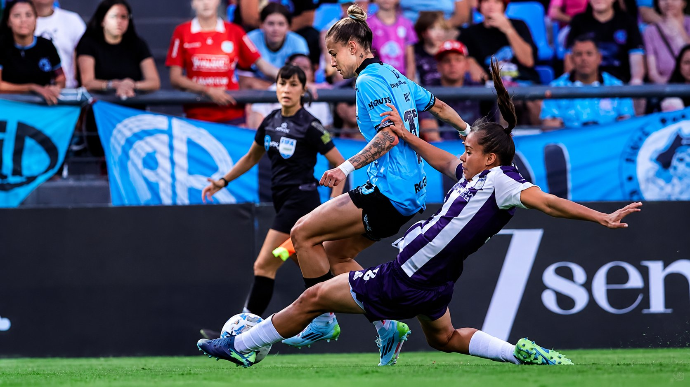

El FC Barcelona es tetracampeón de la Champions League femenina: goleó 4-0 al Lyon en Oslo
25 de mayo de 2026
El FC Barcelona goleó 4-0 al Olympique de Lyon en la final del Ullevaal Stadion de Oslo. Ewa Pajor y Salma Paralluelo marcaron un doblete cada una. El cuarto título europeo del Barça en seis temporadas.

El FC Barcelona goleó 4-0 al Olympique de Lyon en la final de la UEFA Women's Champions League 2026, disputada en el Ullevaal Stadion de Oslo. Los goles llegaron de Ewa Pajor (55' y 69') y Salma Paralluelo (82' y 89'). Un resultado que no deja lugar a dudas sobre quién fue el mejor equipo.
La primera parte fue equilibrada y sufrida para el Barça. El Lyon, el equipo más laureado en la historia de la competición, impuso su físico y generó las situaciones más claras. Fue Cata Coll la que mantuvo el cero en el arco blaugrana con varias intervenciones decisivas.
En la segunda parte el guión cambió por completo. El Barcelona salió con otra intensidad: presión alta, velocidad en transiciones y claridad en el último tercio hicieron imposible al Lyon sostener su nivel. Al 55 llegó el primero de Pajor. Al 69, el segundo. Y Paralluelo cerró el partido con dos goles en los últimos minutos.
Ewa Pajor: la revancha de cinco finales perdidas
La gran figura de la noche fue Ewa Pajor. La delantera polaca llegaba a Oslo con una historia de revancha pendiente: había perdido sus primeras cinco finales europeas. Esta vez marcó dos goles y fue determinante. Un doblete que cerró una historia personal cargada de significado.
Con este título, el Barcelona alcanza seis finales consecutivas y suma su cuarto trofeo europeo. El técnico Pere Romeu ganó la Champions en su primera temporada completa al frente del equipo.
Fuente: UEFA — FC Barcelona — femeninoinfo